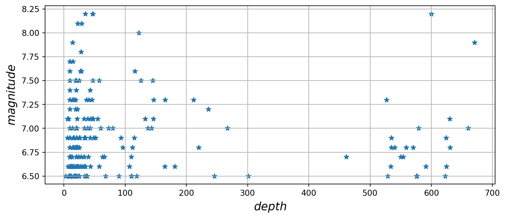
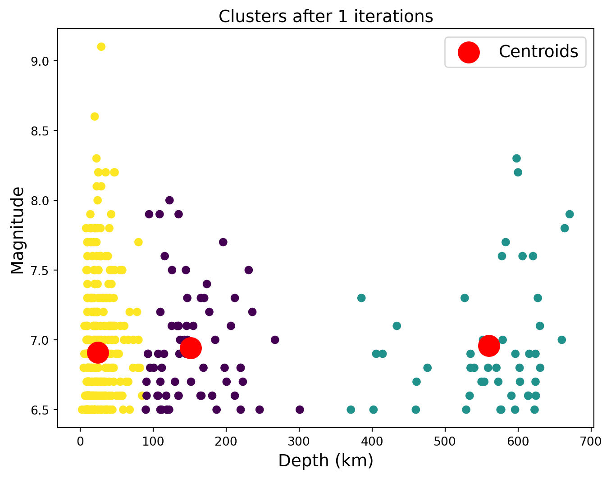

import sys
import pandas as pd
import matplotlib.pyplot as plt
assert sys.version_info >= (3, 7)- Dataset - Depth vs Magnitude of earthquakes that have occurred
- Plot original data on a scatterplot
- Use KMeans for clustering - 3 clusters
- Plot clusters and cluster centers
from packaging import version
import sklearn
assert version.parse(sklearn.__version__) >= version.parse("1.0.1")First we will read the earthquake data. The goal is to find clusters correlating earthquake depth to earthquake magnitude.
df = pd.read_csv("./earthquake_data-checkpoint.csv")
X = df['depth'][0:200]
y = df['magnitude'][0:200]Plot the original data on a scatterplot
import matplotlib.pyplot as plt
plt.rc('font', size=14)
plt.rc('axes', labelsize=14, titlesize=14)
plt.rc('legend', fontsize=14)
plt.rc('xtick', labelsize=10)
plt.rc('ytick', labelsize=10)
plt.figure(figsize=(10, 4))
X = df['depth'][0:200]
y = df['magnitude'][0:200]
plt.scatter(X, y, marker='*')
plt.xlabel("$depth$")
plt.ylabel("$magnitude$", rotation=90)
#plt.axis([90, 160, 60, 75])
plt.grid()
plt.show()
Now we will run the KMeans algorithm to yield 2 clusters. The algorithm will run 10 times. We are running the algorithm on the first 500 data points in the set.
Clustering Based on Magnitude and Depth
By applying KMeans clustering to the magnitude and depth of earthquakes, we can identify distinct categories of earthquakes. These categories might reveal patterns such as typical depth ranges for different magnitudes and help in understanding the nature of seismic activities.
Interpreting Cluster Results
The results from clustering will provide insights into the distribution and characteristics of earthquake events. For instance, clusters might indicate areas prone to high-magnitude earthquakes or regions with frequent but shallow seismic activities. This analysis is essential for disaster preparedness and mitigation strategies.
from sklearn.cluster import KMeans
import numpy as np
k_means = KMeans(init="k-means++", n_clusters=2, n_init=10)
#X = [df['depth'][0:200], df['magnitude'][0:200]]
X = []
for i in range(500):
X.append([df['depth'][i], df['magnitude'][i]])
k_means.fit(X)KMeans(n_clusters=2)After running the algorithm, we can obtain the cluster centers that were found.
from sklearn.metrics.pairwise import pairwise_distances_argmin
k_means_cluster_centers = k_means.cluster_centers_
k_means_labels = pairwise_distances_argmin(X, k_means_cluster_centers)KMeans Clustering Results
In each iteration of the KMeans algorithm, the centroids of the clusters are adjusted to minimize the variance within each cluster. The following plots show how the cluster centroids and the assignment of points to clusters change with each iteration.
Initial Iteration
In the initial iteration, the centroids are randomly placed. The points are assigned to the nearest centroid, forming the initial clusters.
Subsequent Iterations
In each subsequent iteration, the centroids are recalculated as the mean of the points in each cluster. The points are then reassigned to the closest new centroid. This process continues until the centroids stabilize and no longer change significantly.
Final Clusters
After a number of iterations, the centroids converge to a position where they best represent the centers of the clusters. The final plot shows the stable clusters where each point is grouped with similar points, minimizing the variance within each cluster.
from sklearn.cluster import KMeans
import numpy as np
import matplotlib.pyplot as plt
X = np.array(X)
# Number of clusters
num_clusters = 3 # Example number of clusters
# Create KMeans instance
kmeans = KMeans(n_clusters=num_clusters, random_state=42)
# Number of iterations for demonstration
num_iterations = 5
# Plotting the clusters for each iteration
for i in range(num_iterations):
# Run KMeans for a number of iterations
kmeans.n_init = i + 1
kmeans.fit(X)
# Plotting the data and centroids
plt.figure(figsize=(8, 6))
plt.scatter(X[:, 0], X[:, 1], c=kmeans.labels_, cmap='viridis')
plt.scatter(kmeans.cluster_centers_[:, 0], kmeans.cluster_centers_[:, 1], s=300, c='red', label='Centroids')
plt.title(f'Clusters after {i + 1} iterations')
plt.xlabel('Depth (km)')
plt.ylabel('Magnitude')
plt.legend()
plt.show()
Interpretation
The final clusters show three distinct groups of earthquakes. There is a noticeable cluster of earthquakes with a smaller depth range but higher magnitudes, possibly indicating a pattern of seismic activity that could be of interest for further investigation.